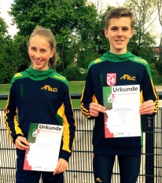

TOLLER AUFTRITT DER RLC-LANGSTRECKLER

Bei den NRW - Langstrecken - Meisterschaften am 29.04.2017 in Neuss hat der RLC-Nachwuchs seine Fähigkeiten eindrucksvoll unter Beweis gestellt:
Louisa Hassel (W14)
und
Nils Guntermann (M15)
fanden sich strahlend auf dem Siegerpodest wieder.